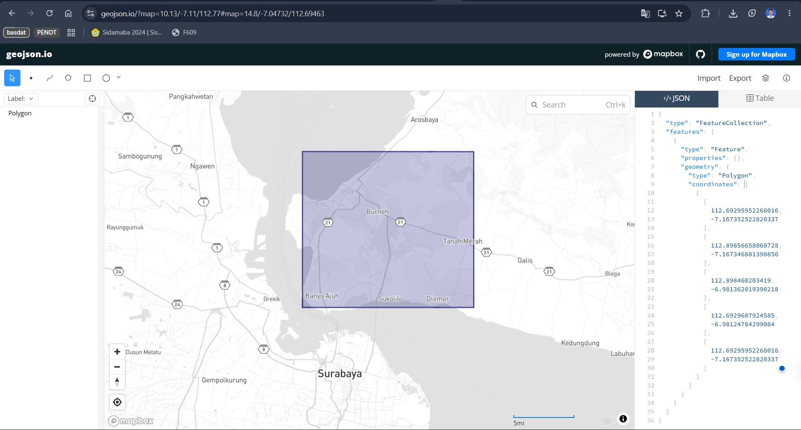
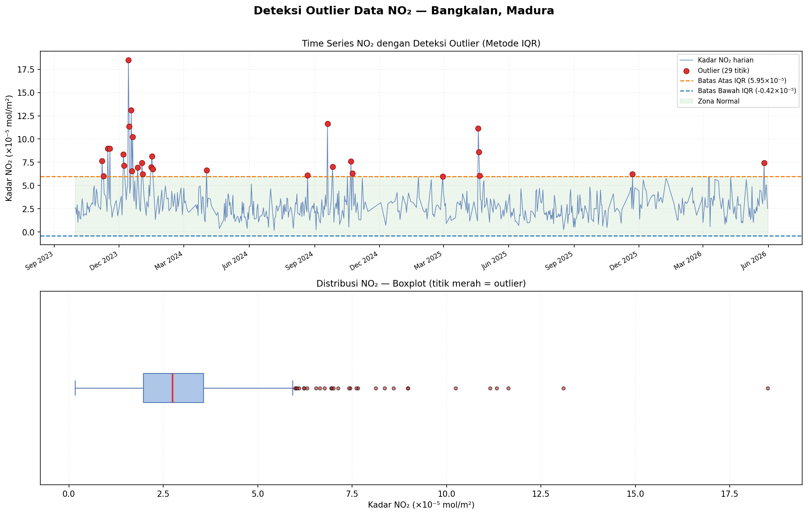
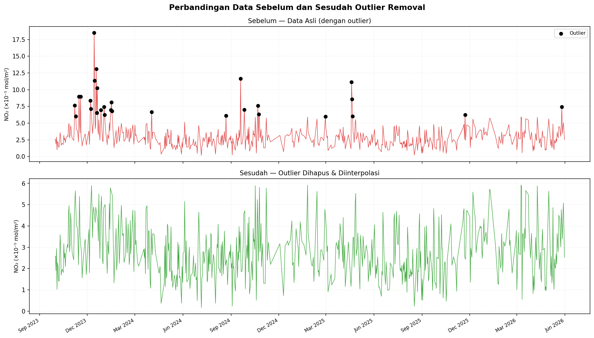
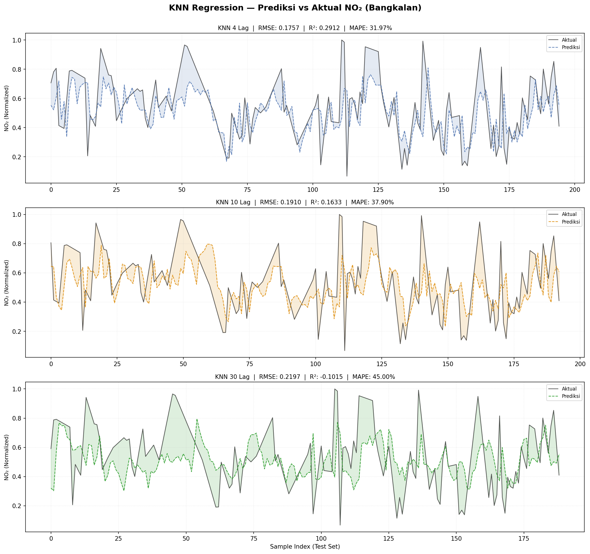
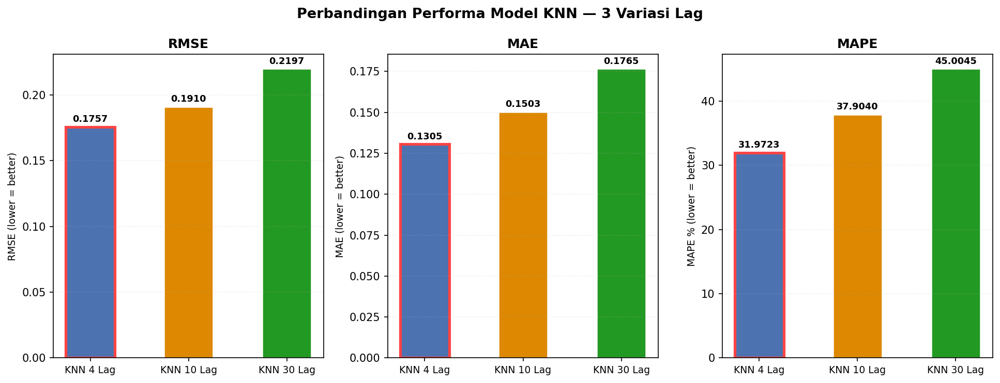
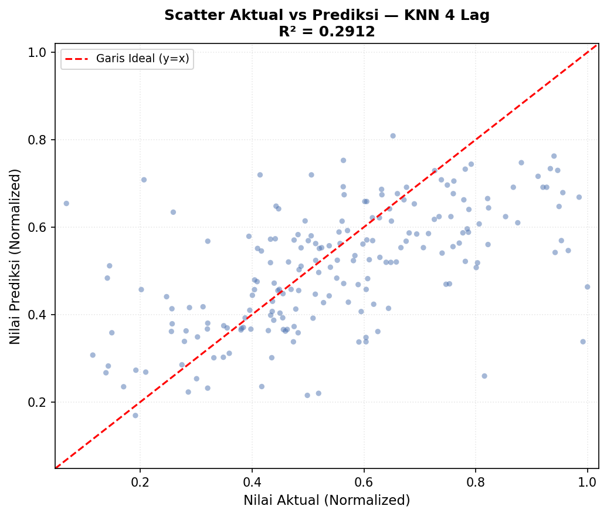

Analisis Time Series Kadar NO₂ di Wilayah Bangkalan, Madura#
Eksplorasi Data, Deteksi Pola Musiman, dan Peramalan dengan KNN Regression#
Latar Belakang#
Nitrogen Dioksida (NO₂) adalah salah satu polutan udara paling signifikan yang dihasilkan dari pembakaran bahan bakar fosil — meliputi emisi kendaraan bermotor, aktivitas industri, dan pembangkit listrik berbahan bakar konvensional. Gas ini bersifat reaktif dan memiliki dampak luas, baik terhadap kesehatan manusia maupun kestabilan ekosistem.
Dampak NO₂ pada Kesehatan: Paparan NO₂ dalam konsentrasi tinggi dapat menyebabkan iritasi saluran pernapasan atas, memperparah kondisi asma dan bronkitis kronis, serta meningkatkan risiko penyakit paru-paru jangka panjang. WHO menetapkan batas aman tahunan rata-rata sebesar 10 µg/m³ (sekitar 5,3 ppb).
Konteks Wilayah Bangkalan: Bangkalan merupakan gerbang masuk Pulau Madura yang terhubung langsung dengan Surabaya melalui Jembatan Suramadu. Pertumbuhan lalu lintas kendaraan yang signifikan sejak diresmikannya jembatan ini, ditambah perkembangan kawasan industri, menjadikan monitoring kualitas udara di wilayah ini relevan dan penting.
Dalam studi ini, kita akan mengeksplorasi karakteristik data time series NO₂ harian di Bangkalan selama periode Oktober 2023 – Mei 2026 menggunakan data satelit Sentinel-5P dari Copernicus, kemudian membangun model peramalan berbasis K-Nearest Neighbors (KNN) Regression.
1. Pengumpulan Data via Sentinel-5P & OpenEO#
Tentang Sentinel-5P#
Sentinel-5P (Precursor) adalah satelit milik ESA (European Space Agency) yang diluncurkan pada 2017 dan khusus dirancang untuk memantau kualitas udara atmosfer bumi. Sensor utamanya, TROPOMI (TROPOspheric Monitoring Instrument), memiliki resolusi spasial 5.5 × 3.5 km dan mampu menghasilkan cakupan global harian.
Data yang digunakan berasal dari produk Level 2 (L2) yang menyediakan kolom vertikal troposferik NO₂ dalam satuan mol/m².
Setup OpenEO#
Akses data dilakukan melalui platform Copernicus Data Space menggunakan library openeo di Python.
pip install openeo
import openeo
# Autentikasi menggunakan OIDC (OpenID Connect)
connection = openeo.connect("openeo.dataspace.copernicus.eu").authenticate_oidc()
Output autentikasi:
Visit https://auth.dataspace.copernicus.eu/... 📋 to authenticate.
✅ Authorized successfully
Authenticated using device code flow.
Kode Pengambilan Data#
Wilayah Bangkalan didefinisikan menggunakan GeoJSON polygon dengan bounding box dari koordinat berikut (diperoleh via geojson.io):

aoi = {
"type": "Feature",
"properties": {},
"geometry": {
"type": "Polygon",
"coordinates": [[
[112.69295952268016, -7.167352522820337],
[112.89856658060728, -7.167346881390856],
[112.898460203419, -6.981362019390218],
[112.6929607924585, -6.98124784299084 ],
[112.69295952268016, -7.167352522820337]
]]
}
}
s5post = connection.load_collection(
"SENTINEL_5P_L2",
temporal_extent=["2023-10-01", "2026-06-01"],
spatial_extent={
"west": 112.69,
"south": -7.16,
"east": 112.89,
"north": -6.98
},
bands=["NO2"],
)
# Agregasi harian → 1 nilai per hari, hindari duplikat overpass
s5p_no2_daily = s5post.aggregate_temporal_period(reducer="mean", period="day")
# Agregasi spasial → rata-rata seluruh piksel dalam AOI
s5p_no2_aoi = s5p_no2_daily.aggregate_spatial(reducer="mean", geometries=aoi)
# Jalankan batch job dan ekspor sebagai CSV
job = s5p_no2_aoi.execute_batch(
title="NO2 in Bangkalan",
outputfile="NO2Bangkalan.csv",
out_format="CSV"
)
Catatan: Proses batch job biasanya memakan waktu 5–10 menit tergantung rentang waktu dan ukuran AOI. Status job dapat dipantau di OpenEO Editor.
Hasil unduhan berupa file CSV dengan tiga kolom:
date,feature_index,NO2
2023-09-30T00:00:00.000Z,0,
2023-10-01T00:00:00.000Z,0,2.5739307501579686E-5
2023-10-02T00:00:00.000Z,0,1.8905272827396403E-5
...
2. Memahami Struktur Data Time Series#
Sebelum melakukan preprocessing, penting untuk memahami karakteristik dasar data yang kita miliki.
import pandas as pd
import numpy as np
df = pd.read_csv("NO2Bangkalan.csv")
df['date'] = pd.to_datetime(df['date'], utc=True).dt.tz_localize(None)
df = df[['date', 'NO2']].sort_values('date').reset_index(drop=True)
print(df.info())
print(df.describe())
print(f"\nTotal baris : {len(df)}")
print(f"Periode : {df['date'].min().date()} s.d. {df['date'].max().date()}")
print(f"Missing NO2 : {df['NO2'].isna().sum()} ({df['NO2'].isna().mean()*100:.1f}%)")
print(f"Nilai negatif : {(df['NO2'] < 0).sum()}")
Total baris : 975
Periode : 2023-09-30 s.d. 2026-05-31
Missing NO2 : 348 (35.7%)
Nilai negatif : 6
Beberapa karakteristik penting data mentah:
35.7% missing value — terjadi ketika satelit tidak memiliki cakupan valid atas wilayah (tutupan awan tebal, kualitas retrieval buruk)
6 nilai negatif — artefak numerik dari proses retrieval yang secara fisik tidak valid
Data tidak selalu berurutan secara kronologis karena cara Copernicus mengirimkan hasil
3. Preprocessing Data#
a. Menangani Missing Value & Nilai Negatif#
Data time series dengan missing value yang acak perlu dilengkapi agar analisis dapat dilakukan secara konsisten. Metode Interpolasi Linear berbasis waktu digunakan karena:
Menjaga kesinambungan urutan temporal
Cocok untuk data lingkungan yang berubah bertahap
Tidak mengasumsikan pola musiman tertentu
# Rata-ratakan jika ada duplikat per tanggal
df = df.groupby('date', as_index=False)['NO2'].mean()
# Buat rentang harian penuh
full_range = pd.date_range(start=df['date'].min(), end=df['date'].max(), freq='D')
df_indexed = df.set_index('date').reindex(full_range)
df_indexed.index.name = 'date'
# Hilangkan nilai negatif (tidak valid secara fisik)
df_indexed.loc[df_indexed['NO2'] < 0, 'NO2'] = np.nan
print(f"Nilai negatif diubah menjadi NaN")
# Interpolasi linear berbasis indeks waktu
df_indexed['NO2'] = df_indexed['NO2'].interpolate(method='time')
# Isi sisa NaN di ujung data dengan forward/backward fill
df_indexed['NO2'] = df_indexed['NO2'].bfill().ffill()
df_clean = df_indexed.reset_index()
print(f"Missing value setelah interpolasi: {df_clean['NO2'].isna().sum()}")
print(f"Total baris final: {len(df_clean)}")
Nilai negatif diubah menjadi NaN
Missing value setelah interpolasi: 0
Total baris final: 975
date NO2
0 2023-09-30 0.000026
1 2023-10-01 0.000026
2 2023-10-02 0.000019
3 2023-10-03 0.000029
4 2023-10-04 0.000010
b. Deteksi dan Penanganan Outlier (IQR)#
Outlier pada data time series dapat disebabkan oleh kejadian atmosferik ekstrem (kebakaran, badai debu) atau kesalahan pengukuran. Metode IQR (Interquartile Range) digunakan untuk mendeteksinya secara statistik.
Q1 = df_clean['NO2'].quantile(0.25)
Q3 = df_clean['NO2'].quantile(0.75)
IQR = Q3 - Q1
lower_bound = Q1 - 1.5 * IQR
upper_bound = Q3 + 1.5 * IQR
outliers = df_clean[(df_clean['NO2'] < lower_bound) | (df_clean['NO2'] > upper_bound)]
print(f"Q1: {Q1:.6f} | Q3: {Q3:.6f} | IQR: {IQR:.6f}")
print(f"Batas bawah : {lower_bound:.6f}")
print(f"Batas atas : {upper_bound:.6f}")
print(f"Jumlah outlier terdeteksi: {len(outliers)}")
Q1: 0.000020 | Q3: 0.000036 | IQR: 0.000016
Batas bawah : -0.000004
Batas atas : 0.000060
Jumlah outlier terdeteksi: 29
Berikut 10 outlier dengan nilai NO₂ tertinggi yang terdeteksi:
date NO2
2023-12-14 0.000185 ← tertinggi sepanjang data
2023-12-18 0.000131
2024-09-19 0.000116
2023-12-15 0.000113
2025-04-19 0.000112
2023-11-15 0.000090
2023-11-18 0.000090
2023-12-19 0.000065
2023-11-07 0.000077
2023-12-07 0.000084
Konsentrasi tinggi di akhir 2023 kemungkinan berhubungan dengan kondisi musim kemarau panjang (el Niño 2023) yang menyebabkan lebih banyak emisi dari kebakaran lahan dan berkurangnya pencucian atmosfer oleh hujan.
Visualisasi Deteksi Outlier:

Gambar 1 — (Atas) Time series NO₂ dengan outlier ditandai titik merah, garis oranye/biru menunjukkan batas atas/bawah IQR, area hijau adalah zona normal. (Bawah) Boxplot distribusi NO₂ — titik di luar whisker adalah outlier.
Outlier dihapus dan diisi kembali menggunakan interpolasi linear untuk menjaga kontinuitas time series:
# Ganti outlier dengan NaN, lalu interpolasi ulang
df_clean['NO2_cleaned'] = df_clean['NO2'].mask(
(df_clean['NO2'] < lower_bound) | (df_clean['NO2'] > upper_bound)
)
df_clean['NO2_filled'] = df_clean['NO2_cleaned'].interpolate(method='linear').bfill().ffill()
print(f"Missing setelah outlier removal + interpolasi: {df_clean['NO2_filled'].isna().sum()}")
Missing setelah outlier removal + interpolasi: 0
Perbandingan sebelum dan sesudah outlier removal:

Gambar 2 — (Atas) Data asli dengan outlier terlihat sebagai lonjakan ekstrem. (Bawah) Data setelah outlier diganti dan diinterpolasi — kurva lebih mulus dan representatif.
4. Analisis Eksploratif Data (EDA)#
a. Statistik Deskriptif#
print(df_clean['NO2_filled'].describe())
count 975.000000
mean 0.000029 ← rata-rata ~2.9 × 10⁻⁵ mol/m²
std 0.000015 ← standar deviasi cukup tinggi, variasi besar
min 0.000002 ← hari terbersih (Jul 2024 & Ags 2025)
25% 0.000020
50% 0.000027 ← median
75% 0.000036
max 0.000185 ← puncak tertinggi (Des 2023)
Nilai rata-rata NO₂ sebesar 2.9 × 10⁻⁵ mol/m² tergolong dalam kisaran moderat untuk kawasan semi-urban. Sebagai perbandingan, wilayah perkotaan padat seperti Jakarta atau Surabaya pusat biasanya mencatat nilai 2–5 kali lebih tinggi.
5 Hari dengan NO₂ Tertinggi:
2023-12-14 → 0.000185 mol/m²
2023-12-18 → 0.000131 mol/m²
2024-09-19 → 0.000116 mol/m²
2023-12-15 → 0.000113 mol/m²
2025-04-19 → 0.000112 mol/m²
5 Hari dengan NO₂ Terendah:
2024-07-06 → 0.000002 mol/m²
2025-08-17 → 0.000002 mol/m²
2024-09-03 → 0.000002 mol/m²
2024-08-02 → 0.000004 mol/m²
2024-04-20 → 0.000004 mol/m²
b. Pola Musiman dan Tren Tahunan#
Analisis rata-rata bulanan menunjukkan pola musiman yang jelas terkait dengan siklus cuaca di Pulau Madura:
df_clean['month_num'] = df_clean['date'].dt.month
monthly_avg = df_clean.groupby('month_num')['NO2_filled'].mean()
print(monthly_avg)
Bulan Rata-rata NO₂ (mol/m²)
Jan 0.000036 ▓▓▓▓▓▓▓▓▓▓▓
Feb 0.000031 ▓▓▓▓▓▓▓▓▓
Mar 0.000029 ▓▓▓▓▓▓▓▓
Apr 0.000028 ▓▓▓▓▓▓▓▓
Mei 0.000026 ▓▓▓▓▓▓▓
Jun 0.000020 ▓▓▓▓▓▓ ← terendah
Jul 0.000025 ▓▓▓▓▓▓▓
Ags 0.000022 ▓▓▓▓▓▓
Sep 0.000025 ▓▓▓▓▓▓▓
Okt 0.000028 ▓▓▓▓▓▓▓▓
Nov 0.000033 ▓▓▓▓▓▓▓▓▓▓
Des 0.000039 ▓▓▓▓▓▓▓▓▓▓▓▓ ← tertinggi
Perbandingan antar musim:
dry_season = df_clean[df_clean['month_num'].isin([6,7,8,9])]['NO2_filled'].mean()
wet_season = df_clean[df_clean['month_num'].isin([11,12,1,2])]['NO2_filled'].mean()
trans_season = df_clean[df_clean['month_num'].isin([3,4,5,10])]['NO2_filled'].mean()
print(f"Musim Kemarau (Jun–Sep) : {dry_season:.6f} mol/m²")
print(f"Musim Pancaroba (Mar–Mei, Okt): {trans_season:.6f} mol/m²")
print(f"Musim Hujan (Nov–Feb) : {wet_season:.6f} mol/m²")
Musim Kemarau (Jun–Sep) : 0.000023 mol/m²
Musim Pancaroba (Mar–Mei, Okt) : 0.000027 mol/m²
Musim Hujan (Nov–Feb) : 0.000033 mol/m²
Interpretasi: NO₂ justru lebih tinggi di musim hujan (+46.1% dibanding musim kemarau). Ini tampak kontra-intuitif, namun dapat dijelaskan oleh dua faktor: (1) musim hujan di Indonesia bersamaan dengan musim angin barat yang membawa massa udara dari daratan dengan beban polutan lebih tinggi, dan (2) inversi termal di pagi hari yang menjebak polutan di lapisan udara bawah lebih lama.
Statistik per Tahun:
Tahun | Mean | Min | Max | Std Dev
2023 | 0.000040 | 0.000010 | 0.000185 | 0.000027
2024 | 0.000027 | 0.000002 | 0.000116 | 0.000014
2025 | 0.000027 | 0.000002 | 0.000112 | 0.000012
2026 | 0.000032 | 0.000006 | 0.000074 | 0.000013
Tahun 2023 menunjukkan rata-rata dan variabilitas yang jauh lebih tinggi — kemungkinan dipengaruhi dampak El Niño 2023 yang memperpanjang musim kemarau dan meningkatkan frekuensi kebakaran lahan di Kalimantan dan Sumatera, yang aerosolnya dapat terbawa angin ke wilayah Jawa-Madura.
c. Uji Stasioneritas (ADF Test)#
Untuk analisis time series yang valid, data harus stasioner — artinya rata-rata dan variannya tidak berubah secara sistematis sepanjang waktu. Uji Augmented Dickey-Fuller (ADF) digunakan untuk memverifikasi ini secara statistik.
Hipotesis:
H₀ (null): Data memiliki unit root → tidak stasioner
H₁ (alternatif): Data tidak memiliki unit root → stasioner
from statsmodels.tsa.stattools import adfuller
adf_result = adfuller(df_clean['NO2_filled'])
print(f"ADF Statistic : {adf_result[0]:.6f}")
print(f"p-value : {adf_result[1]:.8f}")
print(f"Critical 1% : {adf_result[4]['1%']:.4f}")
print(f"Critical 5% : {adf_result[4]['5%']:.4f}")
print(f"Kesimpulan : {'Stasioner ✓' if adf_result[1] < 0.05 else 'Tidak Stasioner ✗'}")
ADF Statistic : -4.018250
p-value : 0.00131791
Critical 1% : -3.4372
Critical 5% : -2.8646
Kesimpulan : Stasioner ✓
ADF statistic (-4.018) lebih kecil dari critical value 1% (-3.437), dan p-value sangat kecil (0.0013 < 0.05). H₀ ditolak, data dinyatakan stasioner — ini adalah syarat yang baik untuk pemodelan time series.
d. Analisis Autokorelasi#
Autokorelasi mengukur seberapa kuat hubungan nilai hari ini dengan nilai hari-hari sebelumnya. Ini penting untuk menentukan fitur lag yang relevan.
no2_vals = df_clean['NO2_filled'].values
for lag in [1, 2, 3, 4, 7, 14, 30]:
corr = np.corrcoef(no2_vals[lag:], no2_vals[:-lag])[0, 1]
print(f" Lag {lag:2d} hari : {corr:.4f}")
Lag 1 hari : 0.6438 ← kuat — kemarin sangat berpengaruh
Lag 2 hari : 0.4187 ← moderat
Lag 3 hari : 0.3272 ← moderat
Lag 4 hari : 0.2680 ← lemah-moderat
Lag 7 hari : 0.1396 ← lemah (1 minggu)
Lag 14 hari : 0.1271 ← lemah (2 minggu)
Lag 30 hari : 0.1480 ← lemah (1 bulan)
Korelasi menurun tajam setelah lag-1, menunjukkan bahwa hari sebelumnya adalah prediktor terkuat. Korelasi di lag 7, 14, dan 30 yang tetap lemah namun tidak nol mengindikasikan adanya sedikit siklus mingguan/bulanan yang mungkin terkait dengan pola aktivitas manusia.
Uji Tren Linear:
from scipy import stats
x = np.arange(len(df_clean))
slope, intercept, r_value, p_value, std_err = stats.linregress(x, df_clean['NO2_filled'])
print(f"Slope : {slope:.2e}")
print(f"R² : {r_value**2:.4f}")
print(f"p-value : {p_value:.4f}")
Slope : 7.00e-13 (sangat kecil, hampir nol)
R² : 0.0003
p-value : 0.5994
Tidak ada tren naik atau turun yang signifikan secara statistik (p > 0.05, R² ≈ 0). Kadar NO₂ di Bangkalan relatif stabil sepanjang periode pengamatan — tidak ada indikasi peningkatan polusi jangka panjang maupun perbaikan kualitas udara yang konsisten.
5. Normalisasi Data#
KNN Regression bersifat distance-based — algoritma menghitung jarak antar titik data untuk menemukan tetangga terdekat. Jika skala fitur berbeda jauh, fitur dengan skala besar akan mendominasi perhitungan jarak secara tidak proporsional.
Oleh karena itu, normalisasi menggunakan Min-Max Scaler dilakukan untuk mengubah semua nilai ke rentang [0, 1]:
from sklearn.preprocessing import MinMaxScaler
scaler = MinMaxScaler()
df_clean['NO2_scaled'] = scaler.fit_transform(df_clean[['NO2_filled']])
print(df_clean[['date', 'NO2_filled', 'NO2_scaled']].head())
date NO2_filled NO2_scaled
0 2023-09-30 0.000026 0.417962
1 2023-10-01 0.000026 0.417962
2 2023-10-02 0.000019 0.299375
3 2023-10-03 0.000029 0.481342
4 2023-10-04 0.000010 0.148689
Penting: Simpan objek
scaleruntuk melakukan inverse transform ketika ingin mengembalikan hasil prediksi ke satuan aslinya (mol/m²).
6. Transformasi ke Data Supervised#
Data time series secara alami berbentuk unsupervised — hanya ada satu variabel (NO₂) yang berubah terhadap waktu, tanpa label target eksplisit. Untuk menggunakan algoritma supervised learning seperti KNN Regression, data perlu ditransformasi dengan teknik lag features (windowing):
Fitur input: nilai NO₂ pada t-n, t-(n-1), …, t-1
Target output: nilai NO₂ pada t (hari ini)
a. Uji Korelasi Lag#
Sebelum menentukan berapa banyak lag yang digunakan, uji korelasi dilakukan antara setiap lag dengan target (t):
def create_supervised(data, n_lag=30):
df_sup = pd.DataFrame()
for i in range(n_lag, 0, -1):
df_sup[f'NO2(t-{i})'] = data.shift(i)
df_sup['NO2(t)'] = data
df_sup.dropna(inplace=True)
return df_sup
supervised_df30 = create_supervised(df_clean['NO2_scaled'], n_lag=30)
lag_cols = supervised_df30.drop(columns="NO2(t)").columns
correlations = supervised_df30[lag_cols].corrwith(supervised_df30['NO2(t)'])
print(correlations.sort_values(ascending=False))
NO2(t-1) 0.6461 ← tertinggi
NO2(t-2) 0.4203
NO2(t-3) 0.3279
NO2(t-4) 0.2671
NO2(t-21) 0.2369 ← ada sedikit pola ~3 mingguan
NO2(t-20) 0.2237
NO2(t-5) 0.2126
NO2(t-22) 0.2016
NO2(t-27) 0.1860
NO2(t-6) 0.1802
...
NO2(t-15) 0.0926 ← terendah
Fitur dengan korelasi di atas 0.25 adalah lag 1, 2, 3, dan 4 — konsisten dengan hasil analisis autokorelasi sebelumnya. Lag 20-22 memiliki korelasi moderat yang menarik, mengindikasikan kemungkinan adanya siklus sekitar 3 minggu terkait perubahan pola angin atau rotasi aktivitas industri.
b. Pembuatan Fitur Lag#
Tiga variasi dataset supervised dibuat untuk perbandingan:
supervised_df4 = create_supervised(df_clean['NO2_scaled'], n_lag=4)
supervised_df10 = create_supervised(df_clean['NO2_scaled'], n_lag=10)
supervised_df30 = create_supervised(df_clean['NO2_scaled'], n_lag=30)
Contoh struktur supervised_df4 (4 hari lag):
NO2(t-4) NO2(t-3) NO2(t-2) NO2(t-1) NO2(t)
4 0.417962 0.417962 0.299375 0.481342 0.148689
5 0.417962 0.299375 0.481342 0.148689 0.365196
6 0.299375 0.481342 0.148689 0.365196 0.335453
...
(971 rows × 5 columns)
7. Modeling KNN Regression#
a. Pelatihan Model#
K-Nearest Neighbors (KNN) Regression bekerja dengan mencari K titik latih terdekat dari sebuah titik uji, lalu menghitung rata-rata nilai target dari K tetangga tersebut sebagai prediksi.
from sklearn.neighbors import KNeighborsRegressor
from sklearn.model_selection import train_test_split
from sklearn.metrics import mean_squared_error, r2_score
def MAPE(y_true, y_pred):
"""Mean Absolute Percentage Error"""
y_true, y_pred = np.array(y_true), np.array(y_pred)
nonzero = y_true != 0
return np.mean(np.abs((y_true[nonzero] - y_pred[nonzero]) / y_true[nonzero])) * 100
def train_knn(df_supervised, model_name="", n_neighbors=5):
X = df_supervised.drop(columns=['NO2(t)']).values
y = df_supervised['NO2(t)'].values
# Split 80/20, shuffle=False untuk menjaga urutan kronologis
X_train, X_test, y_train, y_test = train_test_split(
X, y, test_size=0.2, shuffle=False
)
knn = KNeighborsRegressor(n_neighbors=n_neighbors)
knn.fit(X_train, y_train)
y_pred = knn.predict(X_test)
rmse = np.sqrt(mean_squared_error(y_test, y_pred))
r2 = r2_score(y_test, y_pred)
mape = MAPE(y_test, y_pred)
mae = np.mean(np.abs(y_test - y_pred))
print(f"\n{'='*50}")
print(f" {model_name}")
print(f"{'='*50}")
print(f" Train Size : {len(X_train)} sampel")
print(f" Test Size : {len(X_test)} sampel")
print(f" RMSE : {rmse:.6f}")
print(f" MAE : {mae:.6f}")
print(f" R² Score : {r2:.4f}")
print(f" MAPE : {mape:.4f}%")
return knn, y_test, y_pred
knn_4, y_test_4, y_pred_4 = train_knn(supervised_df4, "KNN — 4 Hari Sebelumnya")
knn_10, y_test_10, y_pred_10 = train_knn(supervised_df10, "KNN — 10 Hari Sebelumnya")
knn_30, y_test_30, y_pred_30 = train_knn(supervised_df30, "KNN — 30 Hari Sebelumnya")
==================================================
KNN — 4 Hari Sebelumnya
==================================================
Train Size : 776 sampel
Test Size : 195 sampel
RMSE : 0.175661
MAE : 0.130530
R² Score : 0.2912
MAPE : 31.9723%
==================================================
KNN — 10 Hari Sebelumnya
==================================================
Train Size : 772 sampel
Test Size : 193 sampel
RMSE : 0.190953
MAE : 0.150250
R² Score : 0.1633
MAPE : 37.9040%
==================================================
KNN — 30 Hari Sebelumnya
==================================================
Train Size : 756 sampel
Test Size : 189 sampel
RMSE : 0.219689
MAE : 0.176541
R² Score : -0.1015
MAPE : 45.0045%
b. Evaluasi dan Perbandingan Model#
Model |
Train |
Test |
RMSE ↓ |
MAE ↓ |
R² ↑ |
MAPE ↓ |
|---|---|---|---|---|---|---|
KNN 4 Lag |
776 |
195 |
0.1757 |
0.1305 |
0.2912 |
31.97% |
KNN 10 Lag |
772 |
193 |
0.1910 |
0.1503 |
0.1633 |
37.90% |
KNN 30 Lag |
756 |
189 |
0.2197 |
0.1765 |
−0.1015 |
45.00% |
↓ = semakin kecil semakin baik | ↑ = semakin besar semakin baik
Plotting prediksi vs aktual:
import matplotlib.pyplot as plt
def plot_result(y_test, y_pred, title):
plt.figure(figsize=(15, 5))
plt.plot(np.arange(len(y_test)), y_test, label="Actual", linewidth=1.2)
plt.plot(np.arange(len(y_pred)), y_pred, label="Predicted", linewidth=1.2, alpha=0.8)
plt.title(title, fontsize=13)
plt.xlabel("Sample Index (Test Set)")
plt.ylabel("NO₂ (Normalized 0–1)")
plt.legend()
plt.tight_layout()
plt.show()
plot_result(y_test_4, y_pred_4, "KNN Regression — 4 Lag (Terbaik)")
plot_result(y_test_10, y_pred_10, "KNN Regression — 10 Lag")
plot_result(y_test_30, y_pred_30, "KNN Regression — 30 Lag")
Hasil visualisasi prediksi vs aktual (ketiga model):

Gambar 3 — Perbandingan nilai aktual (abu-abu) vs prediksi (warna) pada test set. Area berwarna menunjukkan selisih (error) antara prediksi dan aktual. Model 4 lag terlihat paling mengikuti pola aktual dibanding model lainnya.
Perbandingan performa antar model:

Gambar 4 — Bar chart RMSE, MAE, dan MAPE ketiga model. Bar dengan border merah adalah nilai terbaik (terendah) di setiap metrik — ketiganya diraih oleh KNN 4 Lag.
Scatter plot aktual vs prediksi (model terbaik — KNN 4 Lag):

Gambar 5 — Jika model sempurna, semua titik akan jatuh tepat di garis merah putus-putus (y=x). Penyebaran titik menunjukkan besarnya error prediksi. R² = 0.29 berarti model mampu menjelaskan sekitar 29% variabilitas data.
Analisis hasil:
Model KNN dengan 4 lag memberikan performa terbaik pada semua metrik. Nilai R² = 0.29 berarti model mampu menjelaskan sekitar 29% variabilitas data — ini tergolong rendah, namun wajar mengingat:
NO₂ atmosferik sangat dipengaruhi faktor meteorologi (kecepatan angin, curah hujan, suhu, kelembaban) yang tidak dimodelkan di sini
KNN bersifat non-parametrik lokal — tidak mampu menangkap pola global atau musiman jangka panjang
Data satelit memiliki inherent noise dari proses retrieval atmosfer
Model 30 lag justru memberikan R² negatif (-0.10), artinya prediksinya lebih buruk dari sekadar menggunakan rata-rata data. Ini adalah tanda overfitting karena dimensi input yang terlalu tinggi (curse of dimensionality) membuat perhitungan jarak KNN menjadi tidak bermakna.
8. Kesimpulan dan Rekomendasi#
Temuan Utama#
Pola Musiman Jelas: NO₂ di Bangkalan menunjukkan pola musiman yang kuat — lebih tinggi di musim hujan (Nov–Feb, rata-rata 0.000033 mol/m²) dibanding musim kemarau (Jun–Sep, rata-rata 0.000023 mol/m²), dengan selisih 46%. Hal ini terkait dengan pola angin monsun yang membawa massa udara dari arah berbeda.
Tidak Ada Tren Jangka Panjang: Uji linear menunjukkan tidak ada tren kenaikan atau penurunan yang signifikan selama periode 2023–2026 (p = 0.60). Kualitas udara Bangkalan relatif stabil, meski fluktuasi musiman tetap ada.
Data Stasioner: Uji ADF mengkonfirmasi data stasioner (p = 0.0013), artinya sifat statistik data tidak berubah terhadap waktu — kondisi yang menguntungkan untuk pemodelan time series.
Autokorelasi Kuat di Lag Pendek: Korelasi lag-1 (0.644) jauh lebih kuat daripada lag yang lebih panjang, menunjukkan bahwa nilai hari sebelumnya adalah prediktor terbaik untuk hari ini.
KNN Optimal di 4 Lag: Penambahan lag justru menurunkan performa karena curse of dimensionality. Model dengan 4 fitur lag menghasilkan RMSE = 0.1757 dan MAPE = 31.97%.
Rekomendasi untuk Pengembangan#
Untuk meningkatkan akurasi peramalan NO₂, beberapa langkah dapat dipertimbangkan:
Tambahkan fitur meteorologi seperti kecepatan angin, curah hujan, suhu permukaan, dan kelembaban dari sumber seperti ERA5 (Copernicus Climate Data Store)
Coba model yang lebih canggih seperti LSTM (Long Short-Term Memory) atau Prophet yang dirancang khusus untuk time series dengan pola musiman
Pertimbangkan dekomposisi musiman (STL decomposition) untuk memisahkan komponen tren, musiman, dan residual sebelum modeling
Hyperparameter tuning nilai K pada KNN menggunakan cross-validation untuk menemukan K optimal